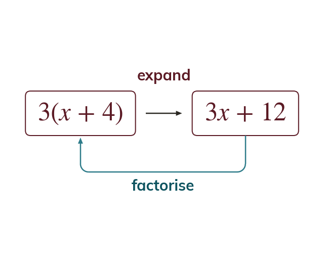

Expanding in reverse
Factorising is the inverse of expanding. The factor outside the bracket divides every term.
Factorising is the inverse of expanding: the expression is rewritten as a product with a bracket. The factor outside the bracket divides every term.